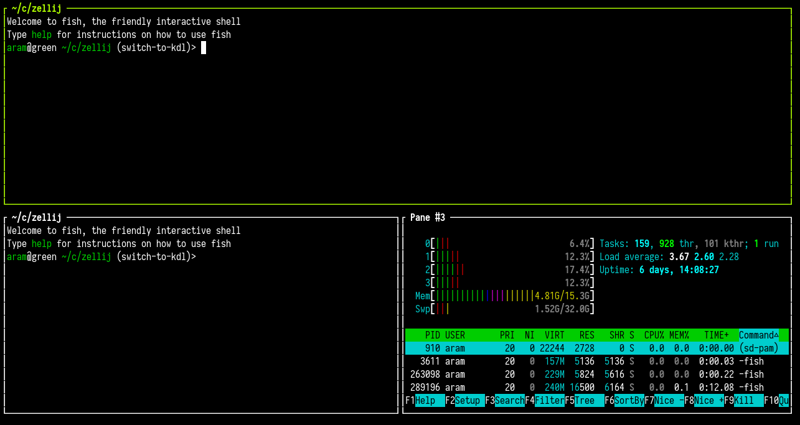

Layouts
Layouts are text files that define an arrangement of Zellij panes and tabs.
You can read more about creating a layout
Looking for the YAML configuration docs for versions <0.32.0? Look no further!
Example
A basic layout can look like this:
// layout_file.kdl
layout {
pane
pane split_direction="vertical" {
pane
pane command="htop"
}
}
Which would create the following layout:

Applying a Layout
A layout can be applied when Zellij starts:
$ zellij --layout /path/to/layout_file.kdl
Or by setting it up in the configuration.
A layout can also be applied inside a running session with the same command:
$ zellij --layout /path/to/layout_file.kdl
In this case, Zellij will start this layout as one or more new tabs in the current session.
A layout can also be applied from a remote URL:
$ zellij --layout https://example.com/layout_file.kdl
For security reasons, remote layouts will have all their commands suspended behind a Waiting ro run <command> banner - prompting the user to run each one.
Layout default directory
By default Zellij will load the default.kdl layout, found in the layouts directory (a subdirectory of the config directory [config/layouts]).
If not found, Zellij will start with one pane and one tab.
Layouts residing in the default directory can be accessed by their bare name:
zellij --layout [layout_name]
Layout Configuration Language
Zellij uses KDL as its configuration language.